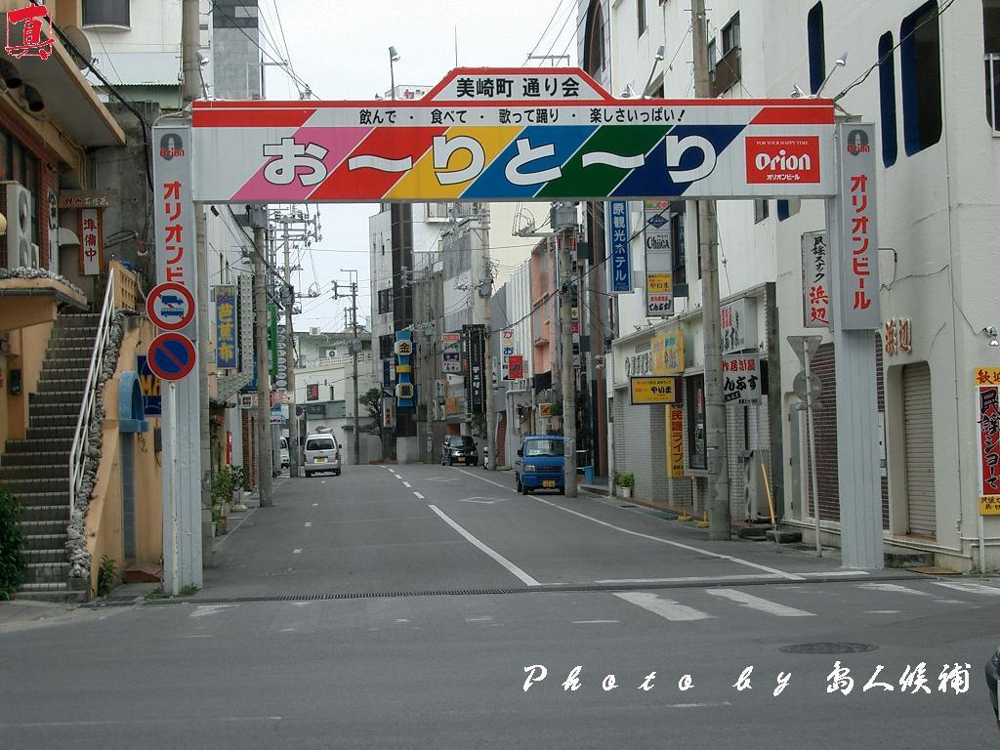
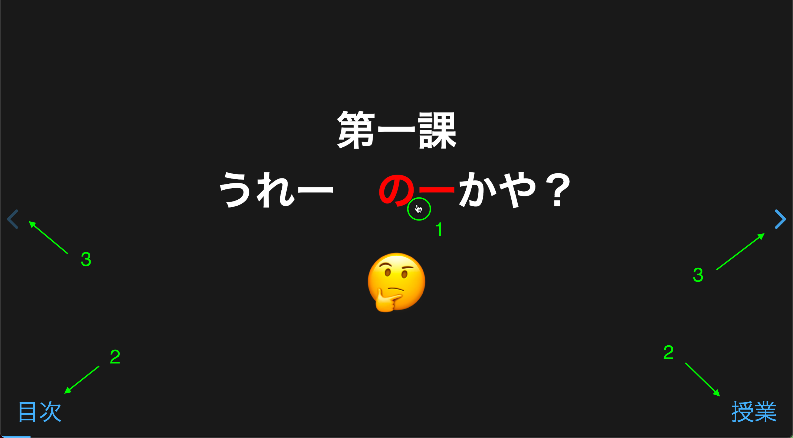
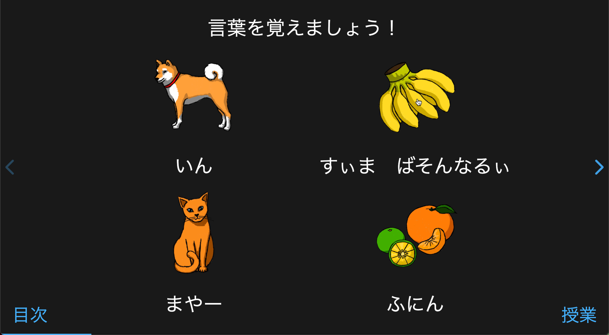
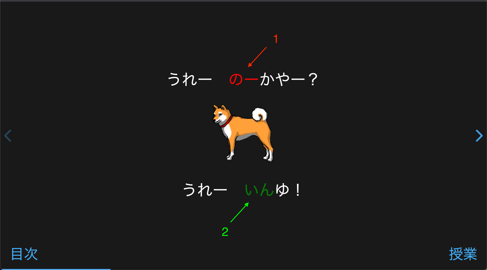
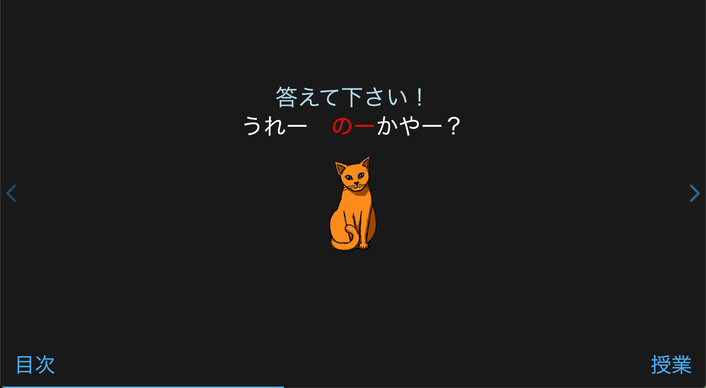
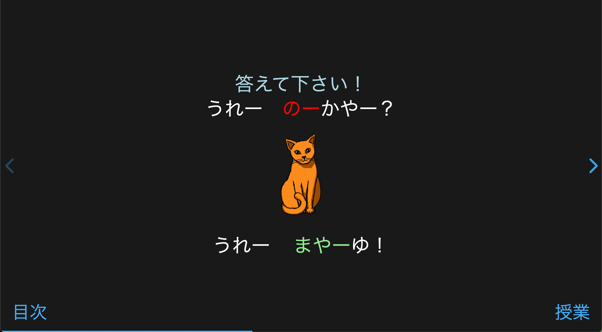
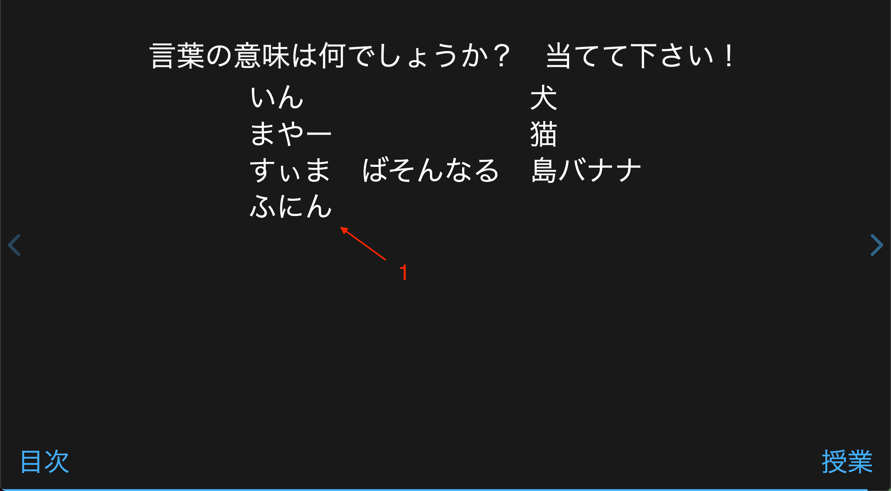
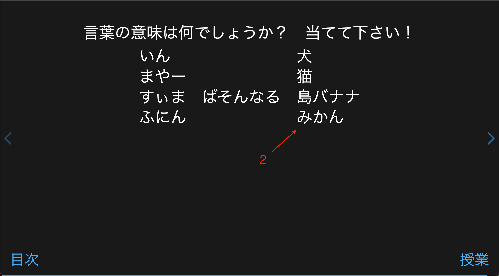

おーりたぼーり!
ウェブサイトの使い方
授業の使い方
授業では帰納的にめーらむにを学んでいきます。つまり、直接には意味を教えませんが、みんなさんがもう知っていることやパターン、映像を使って、自分意味を推測してほしいです。そして、このように学んでいくと、言葉に関する新しい知識とみんなさんが持っている知識が繋がるようになります。まずこの方法で授業を進めますが、すべての課の最後には、復習がありますので、自分が学んだことを確認できます。

- めーらむにの言葉や句の上カーソルを置けば、カーソルがポインタに変わります。押せば、めーらむにの発音が聞こえます。
- すべてのページの左下隅には課の目次へのリンクがあって、右下隅には授業へのリンクがあります。
- 左側の矢印を押せば、前のページに行って、右側の矢印を押せば、次のページに行きます。キーボードの矢印キーも押せます。
単語

- 単語のページでは四つの言葉を学びます。意味は書いていませんが、一緒に来る映像を見て、意味を当ててみてください。
- 映像や言葉を押せば、めーらむにの発音が聞こえます。覚えるために、何度も押して、言葉の発音を真似してください。
文法

- この部分は、文法のパターンを教えます。もう知っている言葉と文脈を使って、パターンの意味を推測してみてください。すべての言葉の意味が分からなくても大丈夫です。大まかな意味を推測してみてください。
- 赤色の言葉は文法に関する大切なポイントです。
- 緑色の言葉はこの課でみんなさんが習った言葉です。
練習

- 「答えてください！」を見たら、習った文法のパターンを使って自分で言ってみてください。文章の意味がはっきり分からなくてもかまいません！
- 答えてみた後で、右側の矢印（や矢印キー）を押して正答を確認してください。
練習

- 「答えてください！」を見たら、習った文法のパターンを使って自分で言ってみてください。文章の意味がはっきり分からなくてもかまいません！
- 答えてみた後で、右側の矢印（や矢印キー）を押して正答を確認してください。
復習

- めーらむにの言葉を見て、意味を当ててみてください。
- 右側の矢印（や矢印キー）を押せば、正解を確認してください。
復習

- めーらむにの言葉を見て、意味を当ててみてください。
- 右側の矢印（や矢印キー）を押せば、正解を確認してください。